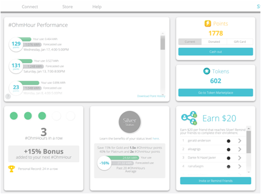

Tools Used
- Building Motivation Over Time
- Feedback
- Financial Incentives and Disincentives
- Norm Appeals
- Obtaining a Commitment
- Overcoming Specific Barriers
- Prompts
Initiated By
- Ohm Connect
Partners
- Utilities
Results
- 50-100kWh per year per household during peak times
- 1 GWh during peak times across all program participants (2017)
Five-Minute YouTube Video Summary
Landmark Case Study
Ohm Connect’s #OhmHour Peak Time Energy Conservation Program
OhmConnect pays participants to save energy when it’s most beneficial to the grid and their wallets. On average, participants save 50-100 kWh at peak times per year per household. This case study highlights three innovative elements of the program: a focus on reducing peak demand with remarkable frequency, flexibility and precision; rich gamification features that encourage user participation; and an option to automate energy savings that was not available until the recent installation of smart meters and widespread availability of smart devices. Designated in 2017.
Background
Note: To minimize site maintenance costs, all case studies on this site are written in the past tense, even if they are ongoing as is the case with this particular program.
Energy used during peak times puts a strain on our electricity networks and is the most expensive and environmentally damaging energy used. That’s why energy conservation is particularly important at peak times. OhmConnect paid participants to not use this energy.
To do this, the company harnessed the interplay between two emerging opportunities by connecting (1) new energy markets and (2) evolving home automation technologies (including smart phones and smart meters.)
At the time of writing this case study in 2018, OhmConnect was the largest third-party residential demand response provider in North America. The company had focused on homes and small businesses in Ontario, Canada and the US states of California and Texas. Its platform was tailored to areas that had smart meters. Users could opt-in to the program and save energy on a weekly basis to earn rewards such as points and rebates.

Getting Informed
In developing its program, OhmConnect relied on the experience of its internal energy experts and resources. In addition, prior to program launch it conducted exploratory discussions with utilities regarding similar projects had been implemented previously. Understanding the challenges, impacts and success of these projects proved essential in determining possible incentive and barriers for its priority audiences.
In addition, recruitment demographics were analyzed on an ongoing basis to determine which social and cultural cohorts were most receptive to the idea of residential demand incentives.
Ohm Connect started with a platform that provided some value to participants and piloted and continually improved it over three years of iterations. Matt Duesterberg, (Founder and CEO), said “When I was looking at this product for the first time, I wanted to provide a line graph with my consumption overtime– provide as much data as possible. But 99% of the people don’t care about my data – they care about my points. I was putting in graphs, I was putting in maps, and my co-founder kept saying no our consumers do not want that and the data consistently showed that we cannot give them what we think is important, we need to give them what they value.”
To do this effectively, the company identified the main motivators for its key audience segments and made sure the product offered something powerful relating to each. There was a very straight forward appeal to those people who would conserve for the money. The focus on “energy sharing” and the ability to donate any money earned to various charities, appealed to community-minded participants (e.g. 100 participants earning $100 a year could earn $10,000 for a common cause). The gaming, technological and challenge aspects themselves appealed directly to some people. There was also the ability to reduce the use of dirty power sources, which appealed to the environmentally-motivated.
Prioritising Audiences
The company initially focused on residential clients. This was identified as an under-served audience because these audiences had not had an easy way to participate in energy markets. This was partly because the necessary technologies were still emerging, and because of administrative barriers to joining existing programs.
Delivering the Program
The program paid households and businesses to reduce their energy use when the electric grid was stressed and power had to come from expensive and highly-polluting sources of generation. It financed these payments by selling their aggregated energy reductions into competitive wholesale electricity markets. (Financial Incentives)
In effect, the energy markets saw these energy savings as virtual power plants, so instead of turning on more polluting (e.g. dirty diesel) power plants, they paid participants to turn down their energy use.
The program positioned peak time reductions as “energy sharing.” Participants were encouraged to “share” their portions of energy by not using them during peak times.
Energy reduction events – branded as #OhmHours– normally occurred about once or twice a week for an hour in the morning or evening. In advance of each event, the program notified relevant participants by email and SMS. Then, when the #OhmHour began, these targeted participants took whatever actions they could to reduce their energy use, such as turning off lights, unplugging laptops and cell phones, and delaying dishwasher and laundry cycles. (Prompts)
After each #OhmHour, participants received data on their performance (based on interval usage data from their electric smart meters) and were awarded points in proportion to the amount of energy they saved. Bonus points were awarded to customers who consistently performed during #OhmHours. (Feedback)
Customers could “cash out” their points at any time via PayPal or Venmo, donate their points to charities and schools, or spend their points on smart devices in the program’s online store.
While each #OhmHour was by definition an hour long, the program had been experimenting with “Doubledown #OhmHours” that extended to longer periods of time.
Some users with wifi thermostats or electric cars connected their devices to the program’s website to automate their participation, but that was not required. The program platform integrated with many popular wifi smart devices, such as programmable communicating thermostats (e.g. Nest and ecobee), smart plugs, and electric vehicle chargers. Participants could connect their smart devices – whether purchased from the program’s store or elsewhere – to their online program accounts and thereby automate their participation in #OhmHours. In this way, their smart devices would automatically turn off when an #OhmHour began, and automatically turn back on when an #OhmHour ended.
According to John Anderson, Director of Energy Markets, “We’re moving towards a paradigm where we have more and more intermittent renewables, we have more a more distributed energy resources like storage and electric vehicles that are causing imbalance on the grid any time of day any time of year, any day of the week. You’re not just getting our Ohm hours on a hot summer afternoon, you’re getting them on weekends, you’re getting them in the morning, they’re getting them in the evening, you’re getting them in the springtime and wintertime.”
Engagement and Gaming Aspects
In order to sell reliable energy savings into the energy markets, Ohm Connect had to engage more people more deeply than existing programs.

It was successful at recruiting and retaining customers by keeping its messaging simple (“Save energy. Get paid.”) and by keeping customers engaged via frequent #OhmHours, prompt feedback and a variety of gaming aspects. (Building Motivation, Engagement and Habits Over Time)
Participants could challenge themselves to progress to different “status levels” based on their reductions in the previous 20 #OhmHours. (Goal Setting)
- Platinum status required an average savings of 40% or more beneath forecasts
- Gold status - 20% or more
- Silver status - less than 20%
For example, if forecasted usage for an #Ohmhour was 1.0kWh and the participant actually used 0.6 kWh, that would be a 40% reduction.
Platinum status members received a 4x multiplier on #OhmHour points, Gold status members received a 2x multiplier on #OhmHour points, and Silver status members received no #OhmHour point multiplier.
Participants could also earn points (worth up to $75) for each new participant that they referred to the program – depending on the status level the new participant achieved. (Norm Appeals, Word of Mouth)
In addition to points, participants could earn tokens in a variety of ways, such as visiting the program website, sharing energy reduction stories and referring a friend who got to the Bronze status level (Norm Appeals, Word of Mouth). In contrast to points, tokens could not be exchanged for cash. However, they could be used to temporarily increase one’s baseline values (which increased both one’s savings relative to baseline), and the incentive for making referrals. Tokens could also be used to participate in draws for prizes ranging from a wifi-thermostat or device discount to a lease on a Tesla Model S.
In 2017, the program introduced “streaks”, where customers could earn bonus incentives for an event if they had successfully reduced their consumption for one or more previous consecutive events. The more they saved, the more they earned. Participants who saved energy during a given #OhmHour received 5% bonus points for successfully reducing energy during the next #OhmHour. For each subsequent #OhmHour in a streak, an additional 5% bonus points was added. For example, four successful events in a row provided a bonus of 15% points during the next #OhmHour. The streak ended if and when the participant went over baseline or opted-out of an event.
Some families encouraged their children to be the main ones turning off the lights, pulling out the plugs etc. and earning the money.
The program’s free service proved especially popular among lower-income households, for whom the points earned participating in #OhmHours were a meaningful source of extra income.
To help ensure that participants were receptive to the prompts, and to reduce message fatigue from receiving messages at inconvenient times, participants had the ability to choose when they wanted to receive (and not receive) these messages. (Obtaining a Commitment; Prompts)
The program used a continuous improvement approach to find new and better ways to keep its participants engaged and excited about opportunities to help the environment and get rewarded.
Although the program focused on residential participants, some of these customers began using it with their small businesses as well.
Reducing Barriers
The program’s “try before you buy” approach to reducing energy allowed customers to participate in #OhmHours – and earn points for their performance – without having to buy expensive energy-management devices. Further, California participants could apply up to $150 of future points earnings towards the purchase of discounted smart devices. There was no sign-up fee and no program membership fee. (Overcoming Specific Barriers)
One of the key barriers to energy conservation is that it is a low priority – so people often neglect to take action even when they support energy conservation in principle. This barrier was reduced by providing benefits participants did care about (see the section above on Getting Informed.) (Vivid, Personalized, Credible, Empowering Communication).
In terms of program participation, the main hurdles were getting users to register for the program and then transition to continued participation in #OhmHour events. These barriers were reduced through advertising, making it easy to register (using one’s existing utility user name and password) and through offering a great experience leading to word-of-mouth promotion (a majority of new users came from referrals.) (Word of Mouth)
For all these reasons, the program was accessible to many more households and businesses than more costly demand energy response solutions, like solar PV and battery storage.
Financing the Program
The program was financed through selling participants’ aggregated energy reductions into competitive wholesale electricity markets.
Measuring Achievements
the time of writing in 2018, the program was only able to measure energy consumption directly for the following users, whose utilities had agreements with the program: those in California served by PG&E, SDG&E, SCE; those served by Toronto Hydro in Ontario, Canada; and some Texas Smart Meter users. The program connected to the utility and received a stream of smart meter data, which allowed for measurements of the amount of energy sharing and saving as well as the impact the program had on the grid. Participants in California who had energy provided by PG&E or SDG&E were asked to sign a document called the CISR, which authorized the program to access their meter data and operate as their Demand Response Provider. All other participants self-reported what they were doing to save energy.
Feedback
After each #OhmHour, participants received data on their performance (based on interval usage data from their electric smart meters) and were awarded points in proportion to the amount of energy they saved.
Results
On average, program participants saved 100-200kWh at peak times per year per household.
Overall impact across all program participants:
- 745,000 kWh per year at peak times
- Replacement of peak power plants with resources made up of thousands of users providing energy efficiency
- Increased adoption rate of devices
- Payments of over $2m across all users in 2017
Notes
Innovation
The program was able to achieve penetration into a significant number of homes based on a given incentive amount per kWh. At increasing values per kWh, it witnessed increased penetration of users. This enabled the grid to have higher penetration of renewable, as it offset the negative pressure on renewables due to grid integration costs. In the chart below, the green line represents the program adoption or energy sharing adoption rate (titled Response Adoption) and the red line represents Solar Adoption. As the value for responsive load increases, solar adoption rates drop while energy sharing adoption rates increase, allowing for a relatively insulated adoption for prosumers under various pricing regimes.

Illustrative graphic of adoption rates of solar or responsive demand at different Grid Integration Costs
The program saw various adoption rates in California by sampling in different locations and using various price signals. After controlling for price, lower-income regions like Bakersfield showed higher adoption rates than higher-income regions like Beverly Hills. Within a single region, there were significantly higher adoption rates for users if paid more.
This case study illustrates three innovative elements.
- First, this program focused specifically on peak demand with remarkable frequency, flexibility and precision.
- Participants anticipated multiple #OhmHours per week (and at various times of day) in contrast with traditional episodic programs that might only go into effect a few times a month at most; thus, participants’ collective energy reduction capability was available for more frequent utilization.
- #OhmHour notifications could be targeted to customers in specific locations, depending on the needs of the grid.
- Participants could begin reducing energy use within seconds of receiving #OhmHour notifications, via behavioral and/or automated actions.
- Participants could provide additional energy reductions at higher price points – i.e. if they were informed that they would be awarded extra points during specific #OhmHours.
2. Second, this program added the rich gamification features discussed above, that encouraged user participation.
3. Third, it made use of an optional level of automation that was not available until the installation of smart meters and the widespread availability of smart devices.
Replication
With appropriate infrastructure investments, a similar approach could be used with other resource conservation behaviors – for example water use during peak periods – or for resource rationing in times of emergency.
Data Sources
More information regarding this program can be found at www.ohmconnect.com
This case study was written in 2018 by Jay Kassirer.